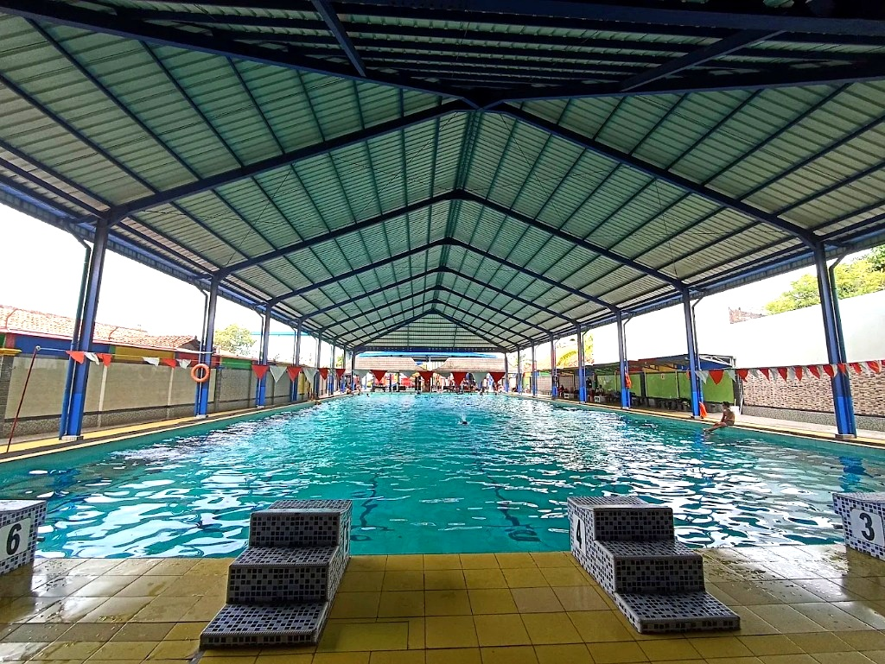

Atap Semi-Indoor Bebas Terik
Berenang kapan saja tanpa takut kulit terbakar matahari. Desain atap semi-indoor kami memastikan sirkulasi udara tetap sejuk dengan pencahayaan alami yang teduh.
Rasakan sensasi kesegaran berenang dengan fasilitas kolam semi-indoor di Tirta Sentul Waterpark & Hall. Dirancang khusus agar Anda dan keluarga dapat bermain air dengan sejuk, aman, dan sepenuhnya terbebas dari terik matahari.

Fasilitas unggulan yang kami sediakan untuk memastikan pengalaman liburan Anda tidak terlupakan.
Berenang kapan saja tanpa takut kulit terbakar matahari. Desain atap semi-indoor kami memastikan sirkulasi udara tetap sejuk dengan pencahayaan alami yang teduh.
Tidak hanya wahana air, kami juga menghadirkan gedung aula serbaguna yang megah, representatif, dan cocok untuk berbagai acara istimewa Anda.
Sistem filtrasi canggih yang bekerja nonstop menjamin kualitas kejernihan dan kebersihan air kolam sehingga aman untuk kulit anak-anak maupun dewasa.